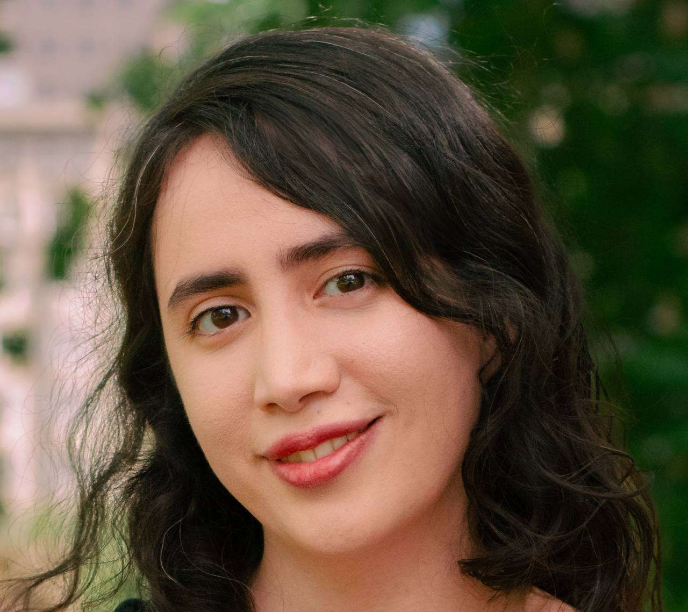

|
About Me
Hi! I’m Saba Ahmadi, a researcher interested in advancing multimodal AI, with a special focus on vision and language. Currently, I’m a research assistant at Mila, working under the guidance of Professor Aishwarya Agrawal. Together, we explore ways to make AI systems that not only "see" images but also interpret them in human-like ways, enabling machines to understand complex visual details and express that understanding through natural language.
I recently completed my Master’s in Computer Science, specializing in Artificial Intelligence, at Université de Montréal and Mila, also under Professor Agrawal’s supervision. Before this, I earned my Bachelor’s in Computer Engineering from Isfahan University of Technology, where I was supervised by Professor Elham Mahmoudzadeh.
My work primarily focuses on advancing vision-language models, exploring areas like fine-grained visio-linguistic understanding, minimal image editing for model refinement, and efficient adaptation to new tasks with limited data. I’m also interested in robust, automatic evaluation techniques, crucial for building trustworthy AI systems. Every project I take on is driven by the goal of making AI systems more perceptive, adaptable, and expressive—helping bridge the gap between machine perception and human understanding.
Email /
Bio /
Scholar /
Twitter /
LinkedIn
|

|
{kind=link}